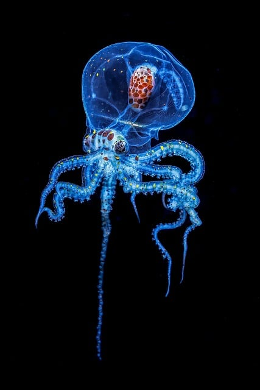
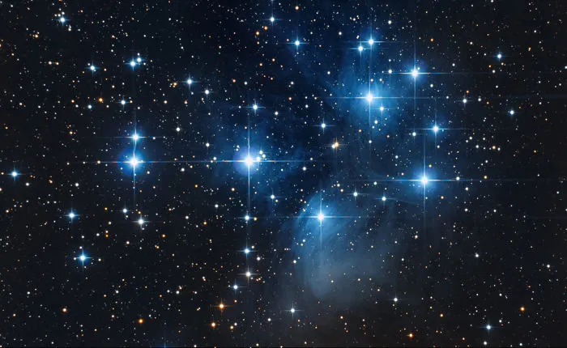
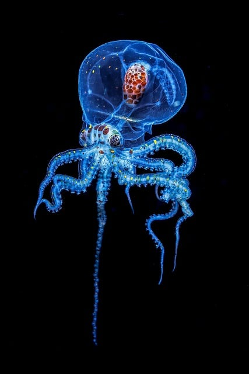
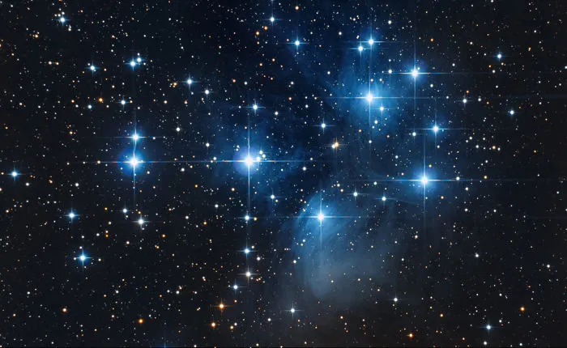

descubra curiosidades fascinantes sobre o mundo ao nosso redor!
você sabia?
o polvo tem três corações e o sangue azul
fato curioso
A lua se afasta da terra cerca de 3,8 cm por ano.
inacreditavel!
existem mais estrelas no universo do que grãos de areia em todas praias da terra.
veja tambem:
assista um vídeo cheio de curiosidades interessantes!
 


